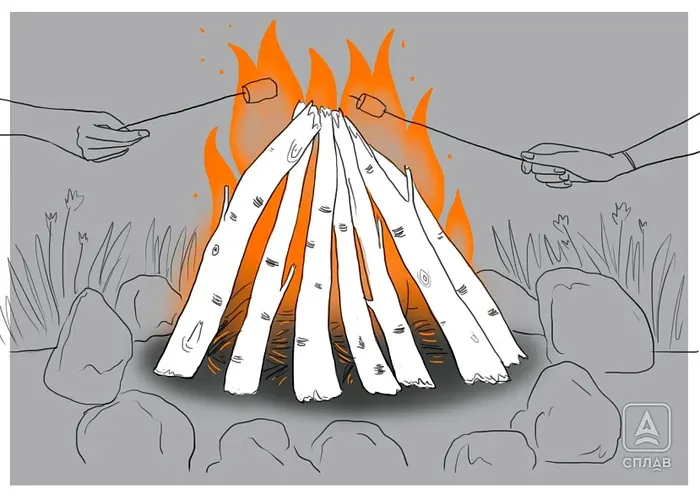

Teepee fire
The best-known fire lay: tinder and small kindling surrounded by larger sticks leaned together into a cone, like a teepee. It builds up faster than any other lay, but without practice it can be slow to catch or burn out quickly. Good for warmth, cooking, and a bit of light, but it needs frequent feeding — left unattended it rarely lasts more than three hours.
- Pile tinder and fine kindling in the center of the site.
- Lean larger sticks against each other around the tinder to form a cone.
- Light the tinder at the base from inside the cone.
- As it catches, add thicker sticks while keeping the cone shape for good airflow.

Photo: Splav.ru